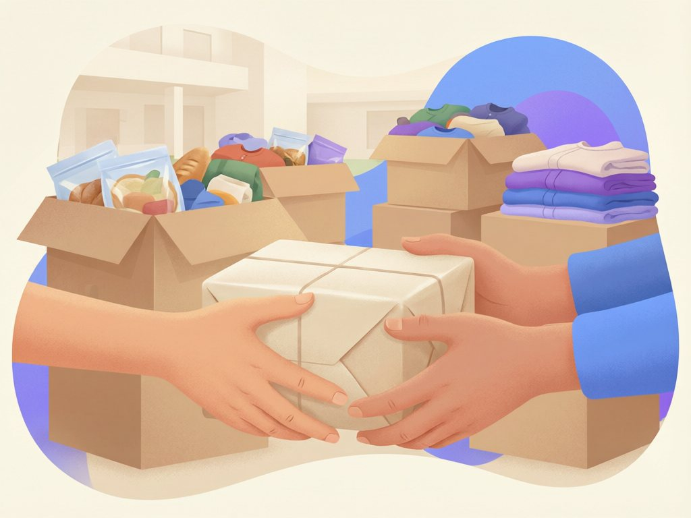

Serving my community
Over 120 hours of service — clean-ups, mentoring, food drives, and first-aid duties. I count this as seriously as any medal.
Programmes I’m part of
Regular commitments, not one-off appearances.
Peer Mentoring Programme
Every Wednesday since 2023, I tutor junior students in mathematics and computer studies. Fifteen of my regular mentees improved by at least one grade band last year — I keep a chart, obviously.
Community First Aider
Certified by the Kenya Red Cross in 2024, I volunteer as a first aider at school sports fixtures and community events — mostly handing out water and plasters, occasionally more.
Church Youth Volunteer
Since 2022 I help organise our youth group’s activities and lead the monthly neighbourhood clean-up roster. I also run the sound desk, which is quieter work but keeps me honest about backup cables.
What the hours went into
Click any photo to enlarge.


Run a community programme?
I’m always looking for new ways to serve — especially anything that involves teaching, sport, or the environment.